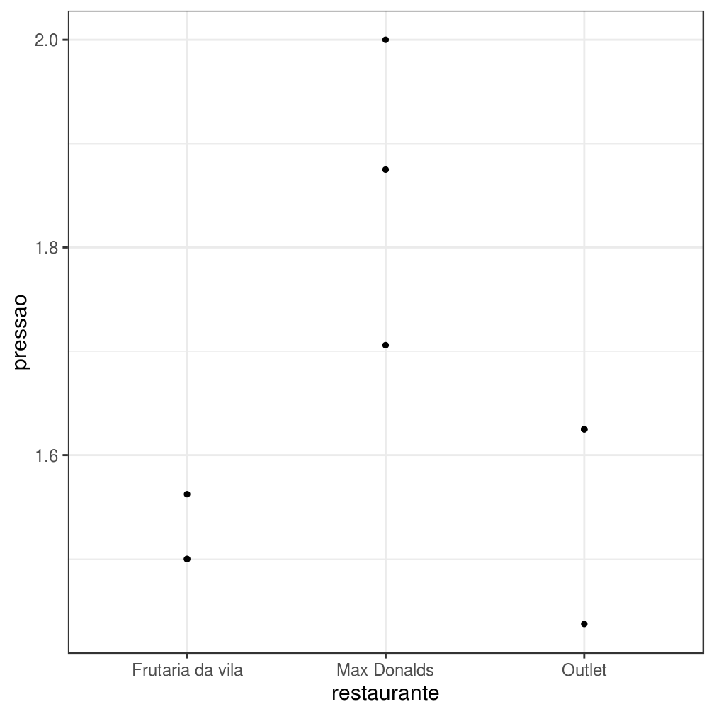
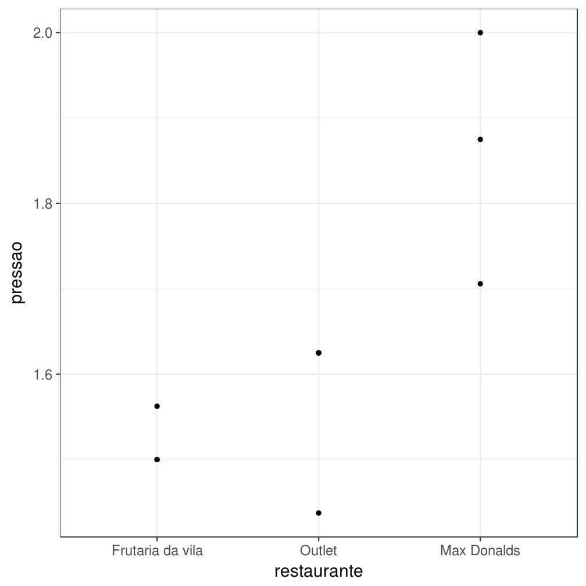
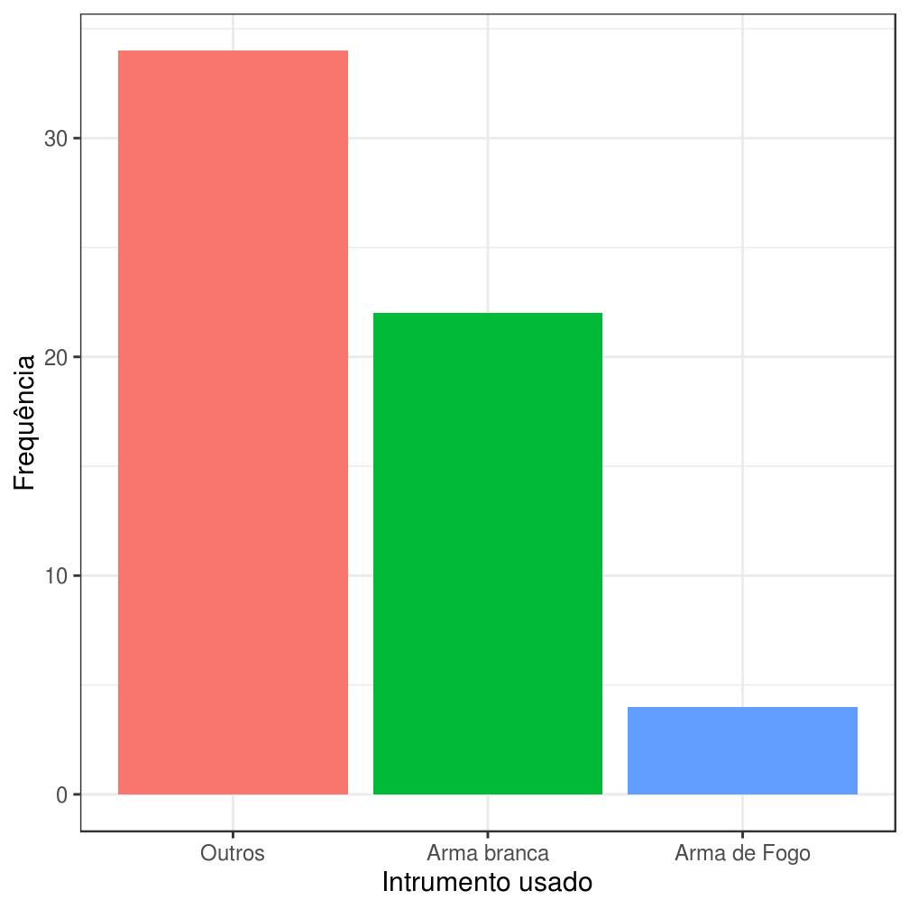
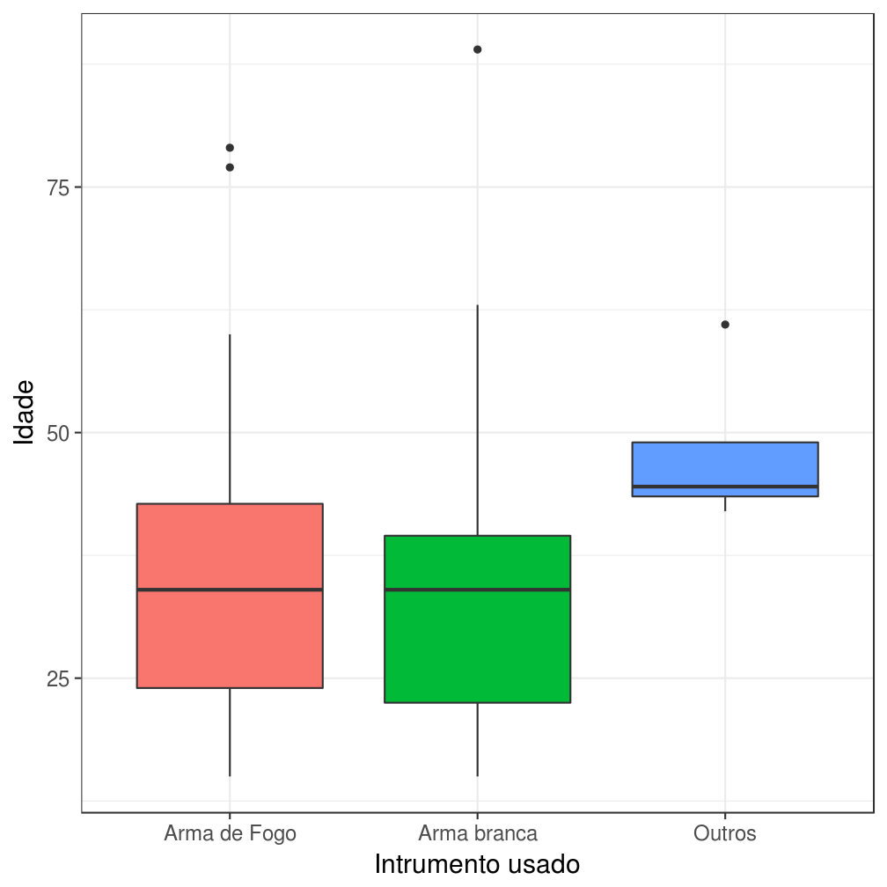
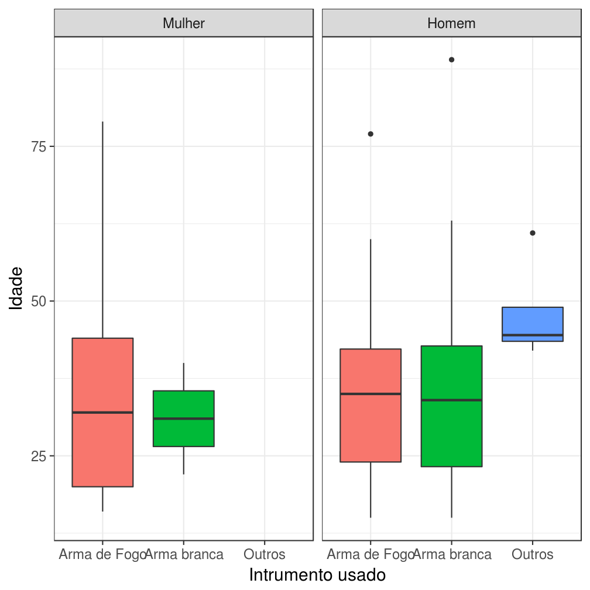
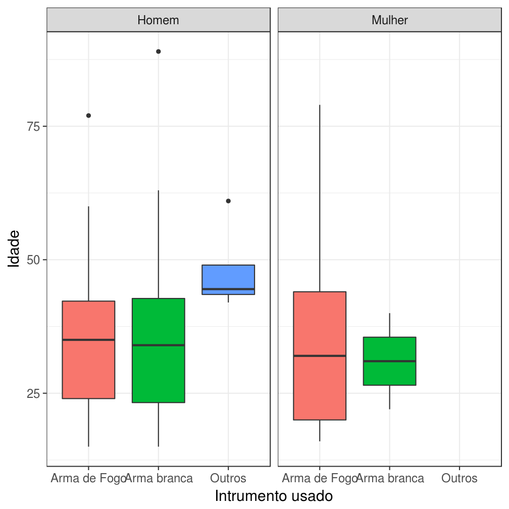

Manipulando fatores
Introdução
Se você já utilizou R anteriormente, provavelmente já escreveu a expressão stringsAsFactors = F quando importava dados usando as funções read.csv ou read.table. É muito frustrante quando uma coluna de strings é lida como um fator, pois fatores não podem ser manipulados do mesmo jeito que manipulamos vetores de strings.
Felizmente, depois de aprender a usar o tidyverse você não terá mais esse problema, pois o pacote readr não lê colunas de caracteres como fatores por padrão. Mas isso não significa que fatores são inúteis. Eles representam uma forma muito prática de lidar com variáveis categorizadas, tanto para fins de modelagem quanto para fins de visualização.
Grande parte da frustração associada ao uso de fatores no R existe por conta da falta de algumas ferramentas úteis no pacote base. Para resolver esse o problema, Hadley Wickham ajudou a comunidade R (de novo) desenvolvendo o pacote forcats(for categorial variables), que implementa algumas dessas ferramentas.
As principais funções do forcats servem para alterar a ordem e modificar os níveis de um fator. Para exemplificar a utilidade dessas funções, neste Power Up vamos utilizá-las em situações corriqueiras.
Relembrando: o que são fatores?
No R, fatores são estruturas de dados utilizadas para ordenar strings. Formalmente, um fator é definido como um vetor de integers com dois atributos específicos:
levels: m vetor destringsque indica a relação de ordem entre as variáveis.class: astringatômica"factor".
Em modelos estatísticos clássicos, como ANOVA, é útil e adequado interpretar um vetor de textos como um vetor de números inteiros. O nome “fator”, inclusive, foi definido fazendo alusão à literatura estatística.
Para que fatores servem?
Fatores são úteis porque facilitam a ordenação de vetores de texto, principalmente quando estamos fazendo gráficos. Nesta seção, vamos exemplificar essa facilidade com um exemplo.
Considere que temos interesse em construir um gráfico que ilustre a diminuição da pressão sanguinea de um conjunto de indivíduos em função do restaurante em que acabaram de jantar. Para realizar esta tarefa, fomos à praça de alimentação de um shopping e anotamos as pressões arteriais de 10 voluntários conforme eles terminavam suas refeições nos restarantes Max Donalds, Frutaria da vila e Outlet.
O resultado das nossas medições está descrito na tabela abaixo.
| voluntario | restaurante | pressao |
|---|---|---|
| 1 | Frutaria da vila | 1.56 |
| 2 | Max Donalds | 1.71 |
| 3 | Outlet | 1.44 |
| 4 | Outlet | 1.62 |
| 5 | Max Donalds | 2.00 |
| 6 | Outlet | 1.62 |
| 7 | Frutaria da vila | 1.50 |
| 8 | Max Donalds | 1.88 |
| 9 | Outlet | 1.62 |
| 10 | Frutaria da vila | 1.50 |
Utilizando esses dados, o gráfico desejado fica:
d %>%
ggplot(aes(x = restaurante, y = pressao)) +
geom_point() +
theme_bw(15)

O gráfico mostra o que desejávamos, mas podemos incluir outras informações no gráfico. Se soubéssemos a priori que o Max Donalds oferece uma refeição muito mais calórica do que o Outlet, gostaríamos de atribuir essa ordem ao nosso eixo x. Como poderíamos fazer isso? Usando fatores!
d %>%
mutate(restaurante = factor(restaurante, levels = c("Frutaria da vila", "Outlet", "Max Donalds"))) %>%
ggplot(aes(x = restaurante, y = pressao)) +
geom_point() +
theme_bw(15)

Estrutura básica
O forcats é um pacote bastante simples. Ele é composto por funções de apenas dois tipos:
- Funções que começam com
fct_, que recebem uma lista de fatores e devolvem um fator.- Exemplo:
fct_crecebe uma lista de fatores e devolve um fator que é a união dos anteriores.
- Exemplo:
fator_1 <- factor(c("a","b","c"))
fator_2 <- factor(c("d","e"))
fator_3_sem_sentido <- c(fator_1, fator_2)
fator_3_sem_sentido
## [1] 1 2 3 1 2
fator_3_com_sentido <- forcats::fct_c(list(fator_1, fator_2))
fator_3_com_sentido
## [1] a b c d e
## Levels: a b c d e
- Funções que começam com
lvl_, que modificam os níveis de um fator.- Exemplo:
lvl_revaluerecebe um fator e um vetor destringscom dimensão igual ao número de níveis do fator. Retorna o fator fornecido com o atributolevelsigual ao vetor destringsfornecido.
- Exemplo:
fator <- factor(c("a","b","c"))
novos_niveis <- c("c", "b", "a")
fator <- forcats::lvls_revalue(fator, novos_niveis)
Principais funções
Nesta seção, vamos estudar o funcionamento das principais funções do forcats utilizando como motivação a visualização dos dados de uma base analisada pela Associação Brasileira de Jurimetria. A base foi simplificada para otimizar seu uso neste curso. Além disso, os dados passaram por um processo de anonimização, pois os resultados ainda não foram divulgados.
A base contém informações sobre uma amostra de vítimas de homicídios no município de São Paulo e é composta pelas seguintes variáveis:
instrumento.usado: instrumento usado pelo crime.sexo.vítima: sexo da vítima.idade.vítima: idade da vítima.
Modificar níveis de fatores
A tabela abaixo ilustra a distribuição dos valores da variável instrumento.usado.
| instrumento.usado | Frequência |
|---|---|
| Arma de fogo | 30 |
| Faca | 17 |
| Fio elétrico (vítima foi estrangulada) | 2 |
| Fogo | 2 |
| Nenhum | 2 |
| Revólver | 2 |
| Veículo | 2 |
| 38 | 1 |
| Fio elétrico | 1 |
| Pistola | 1 |
Como existe uma grande variabilidade de instrumentos, vamos reclassificar a variável instrumento.usado em um fator com níveis menos gerais.
Para realizar essa tarefa, vamos utilizar a função fct_collapse e a função fct_lump. A função fct_collapse é uma generalização de uma outra função chamada fct_recode. A função fct_collapse recebe um fator e uma série nomeada de vetores de strings, enquanto a função fct_recode recebe um fator e uma série de strings nomeadas. Já a função fct_lump transforma os níveis menos frequentes de um fator em um nível “Outros”.
Abaixo exemplificamos a utilização das três funções mencionadas no parágrafo anterior:
fator <- factor(c("a","a","a","b","b", "c", "d", "e"))
fct_collapse(fator, b2 = c("b", "c"), a2 = c("a", "d"))
## [1] a2 a2 a2 b2 b2 b2 a2 e
## Levels: a2 b2 e
fct_recode(fator, b2 = "b", b2 = "c", a2 = "a", a2 = "d")
## [1] a2 a2 a2 b2 b2 b2 a2 e
## Levels: a2 b2 e
fct_lump(fator, 2, other_level = "Outros")
## [1] a a a b b Outros Outros Outros
## Levels: a b Outros
Voltando à nossa aplicação, vamos utilizar a função fct_collapse para recodificar a variável instrumento.usado. Após essa reclassificação, os níveis com poucas contagens serão convertidos em “Outros” por meio da função fct_lump:
bd_enasp_abj <- bd_enasp_abj %>%
mutate(instrumento.usado = fct_collapse(instrumento.usado,
`Arma branca` = c("Faca", "Fio elétrico", "Fio elétrico (vítima foi estrangulada)", "Fogo"),
`Arma de Fogo` = c("Pistola", "Revólver", "Arma de fogo","38")),
instrumento.usado = fct_lump(instrumento.usado, 2, other_level = "Outros"))
Após a reclassificação a distribuição fica:
bd_enasp_abj %>%
count(instrumento.usado) %>%
knitr::kable()
| instrumento.usado | n |
|---|---|
| Arma de Fogo | 34 |
| Arma branca | 22 |
| Outros | 4 |
Reordenar níveis de fatores
Vamos visualizar a tabela anterior como um gráfico.
A ordem das barras nesse gráfico não está muito intuitiva, pois uma arma de fogo é um instrumento de crime mais perigoso do que uma arma branca, mas o eixo das abscissas não transmite essa informação.
Alterar a relação de ordem entre os níveis de um fator pode ser feito de duas maneiras:
- Alterando diretamente o atributo
levels. - Criando o fator novamente.
bd_teste <- bd_enasp_abj
levels(bd_teste$instrumento.usado) <- c("Outros", "Arma branca", "Arma de Fogo")
bd_teste %>%
ggplot(aes(x = instrumento.usado, fill = instrumento.usado)) +
geom_bar() +
theme_bw(15) +
xlab("Intrumento usado") +
ylab("Frequência") +
theme(legend.position = 'none')

Mudar diretamente os níveis também mudou as labels impressas! Mesmo que os níveis do novo fator bd_teste$instrumento.usado estejam na ordem correta, os rótulos também foram alterados.
O problema da reordenação pode ser resolvido conforme ilustrado no código abaixo:
bd_teste <- bd_enasp_abj
novos_niveis <- c("Outros", "Arma branca", "Arma de Fogo")
bd_teste$instrumento.usado <- factor(bd_teste$instrumento.usado, novos_niveis)
bd_teste %>%
ggplot(aes(x = instrumento.usado, fill = instrumento.usado)) +
geom_bar() +
theme_bw(15) +
xlab("Intrumento usado") +
ylab("Frequência") +
theme(legend.position = 'none')

No forcats, a reordenação equivalente a criar o fator novamente pode ser feita de três maneiras:
lvl_reorder, que reordena os níveis de um fator de acordo com um conjunto de índices. Recomenda-se o uso dessa função quando se quer reordenar os níveis de uma maneira facilmente parametrizável, como uma permutação dos índices dos níveis. Um exemplo comum é trocar a ordem dos níveis de crescente para decrescente.
fator <- factor(letters)
#altera a ordem dos fatores de crescente para decrescente
lvls_reorder(fator, length(letters):1)
## [1] a b c d e f g h i j k l m n o p q r s t u v w x y z
## Levels: z y x w v u t s r q p o n m l k j i h g f e d c b a
fct_reorderefct_reorder2, que reordenam os níveis de um fatorfde acordo com a aplicação de uma função em um vetor (ou dois no caso defct_reorder2) agrupado porf. Recomenda-se o uso dessa função quando se quer reordenar os níveis considerando os valores de uma outra variável ou resultado de um cálculo.
fator <- factor(c("a","a","a","b","b","c"))
vetor <- c(1,2,3,1,1,1.2)
#ordena os níveis de acordo com a média da variável vetor em cada nível
fct_reorder(fator, vetor, fun = mean)
## [1] a a a b b c
## Levels: b c a
fct_relevel, que “puxa” os níveis de um fator para o começo do vetor de níveis.
fator <- factor(c("a","a","a","b","b","c"))
#"puxa" os níveis "b" e "c" para o começo
fct_relevel(fator, "b","c")
## [1] a a a b b c
## Levels: b c a
Na nossa aplicação, podemos utilizar tanto a função lvls_reorder quanto a função fct_relevel. O gráfico resultante ordena os níveis de instrumento.usado como queríamos.

Fazendo tudo de uma vez
Nesta sessão, vamos utilizar as funções para exemplificar utilizações do pacote forcats para visualizações.
A visualização abaixo ordena os níveis de “instrumento.usado” de acordo com a mediana da idade das vítimas de homicídio.
bd_enasp_abj %>%
mutate(instrumento.usado = fct_reorder(instrumento.usado, `idade.vítima`, fun = median)) %>%
ggplot(aes(x = instrumento.usado, y = `idade.vítima`, fill = instrumento.usado)) +
geom_boxplot() +
theme_bw(15) +
xlab("Intrumento usado") +
ylab("Idade") +
theme(legend.position = 'none')

A visualização abaixo exemplifica um caso em que a ordem dos facets foi invertida reordenando o fator sexo.vítima.
bd_enasp_abj %>%
mutate(instrumento.usado = fct_reorder(instrumento.usado, `idade.vítima`, fun = median),
`sexo.vítima` = fct_recode(`sexo.vítima`, Homem = "M", Mulher = "F")) %>%
ggplot(aes(x = instrumento.usado, y = `idade.vítima`, fill = instrumento.usado)) +
geom_boxplot() +
theme_bw(15) +
xlab("Intrumento usado") +
ylab("Idade") +
facet_wrap(~`sexo.vítima`) +
theme(legend.position = 'none')

bd_enasp_abj %>%
mutate(instrumento.usado = fct_reorder(instrumento.usado, `idade.vítima`, fun = median),
`sexo.vítima` = fct_recode(`sexo.vítima`, Homem = "M", Mulher = "F"),
`sexo.vítima` = fct_relevel(`sexo.vítima`, "Homem", "Mulher")) %>%
ggplot(aes(x = instrumento.usado, y = `idade.vítima`, fill = instrumento.usado)) +
geom_boxplot() +
theme_bw(15) +
xlab("Intrumento usado") +
ylab("Idade") +
facet_wrap(~`sexo.vítima`) +
theme(legend.position = 'none')

- Transforme o fator
f1no fatorf2.
- Transforme o fator
f1no fatorf3.